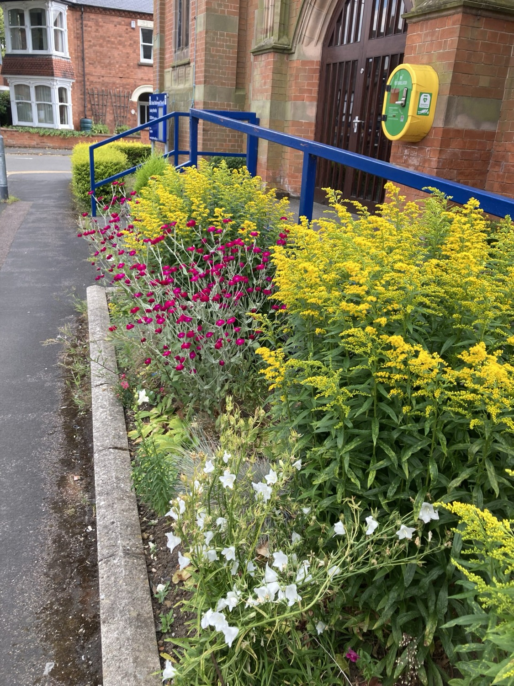
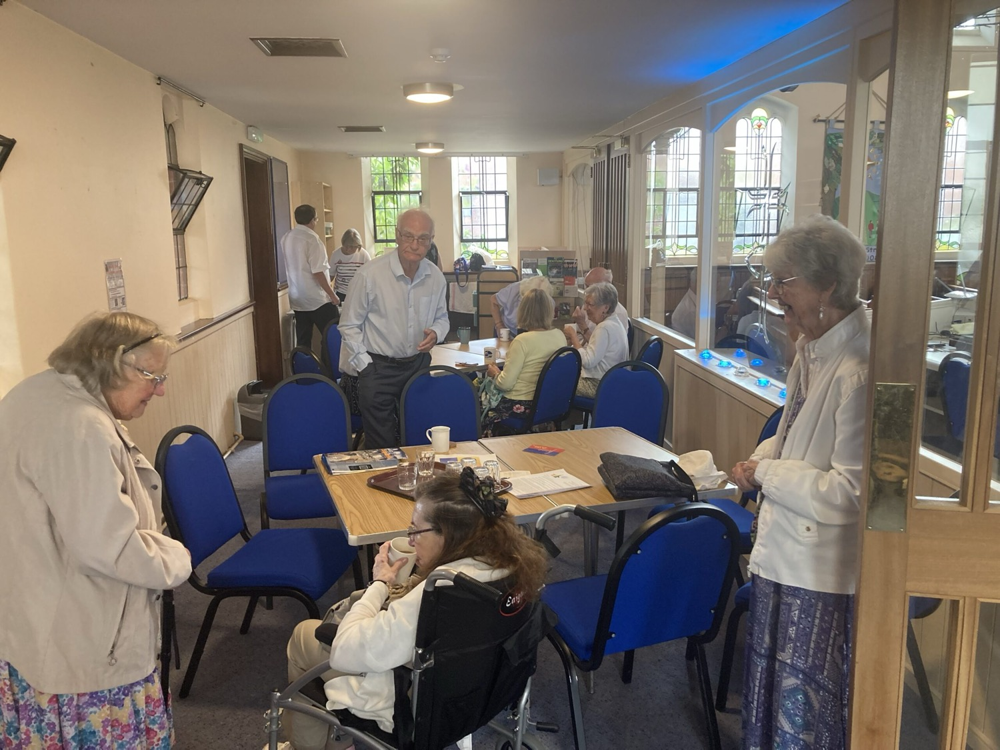
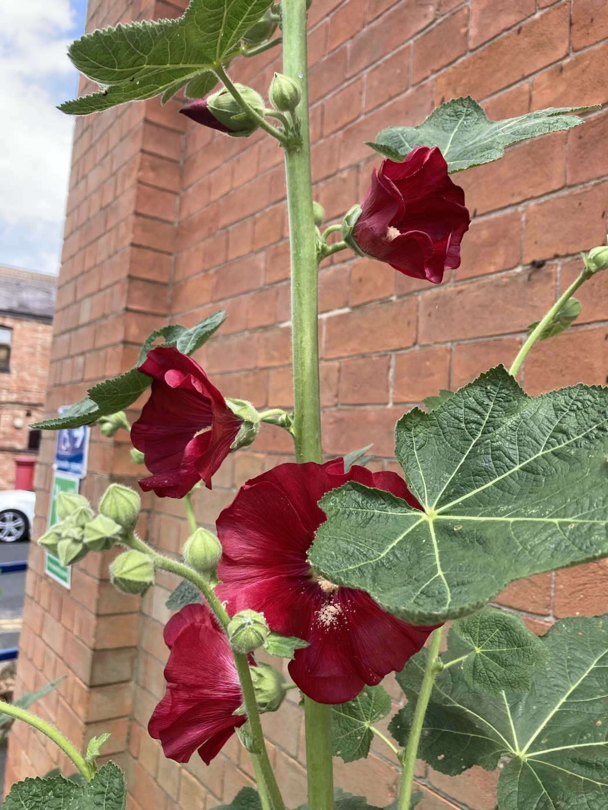

Loughborough United Reformed Church
A welcoming church for the whole community
"We seek, in everything we do, to show Christ to the world through loving action."
An open, inclusive church and a busy community centre on Frederick Street, where families are fed, neighbours are welcomed, and everyone has a seat at the table.
- Welcoming since 1828
- Grade II listed
- Eco Church Silver

This week
Our weekly rhythm
All are welcome, come as you are. Our regular gatherings are below; the live calendar shows everything happening in the building.
- Sunday, 10:45am Morning Worship Communion on the 2nd Sunday
- 2nd Sunday, 11am, 3pm Community Kitchen A meal open to all
- 2nd & 4th Tuesday, 12:30pm Gather Together Prayer, food & fellowship
- Wednesday, 3:30, 5:30pm Warm Wednesday Welcome Term-time Oct, Apr · Upper Hall
- 1st, 3rd & 5th Friday, 10:30am Bible Study Blue Room
- School holidays, Tue & Thu Grub Club Food & fun for families, 11am, 2pm
Live calendar
Everything happening at the church and centre, kept up to date.
Our mission
"We seek, in everything we do, to show Christ to the world through loving action."Loughborough URC
Worship & spiritual life
Sundays at Loughborough URC
Traditional yet relaxed: reverent, but warm and unstuffy. A broad, inclusive theology, and a genuine welcome whoever you are.
Sunday worship
Morning Worship each week, with Holy Communion on the second Sunday of the month. Occasionally we hold afternoon worship at 3:00pm instead, see the calendar.
Music
Our services are accompanied every Sunday by talented organists and a grand piano. Music is at the heart of our worship.
Prayer & fellowship
A time of prayer, food and fellowship in the church at 12:30pm. We also produce a Prayer Calendar to guide our prayers through the week.

Community life
Activities for all ages, all week
Our building is busiest during the week, feeding families, welcoming neighbours and offering a warm, safe space to belong.
From holiday clubs for children to a monthly community meal and a warm space through the winter, there is a place here for everyone, of any age and any background.
Grub Club Families
Food and fun for children and families during most school holidays, when free school meals stop and budgets are stretched.
Contact: grub-club@outlook.com
Warm Wednesday Welcome All ages
A warm space with refreshments and company through the colder months. Term-time, October to April, in the Upper Hall.
Community Kitchen Open to all
A welcoming community meal, open to everyone. Good food and good company, no questions asked.
Gather Together Prayer
Prayer, a simple meal and fellowship together in the church.
Bible Study Faith
An informal, friendly group exploring scripture together in the Blue Room.
Town of Sanctuary Welcome
We are proud to stand with people seeking sanctuary, supporting Loughborough's welcome to those who have made their home among us.
Rooms for hire
A home for the whole community
Our halls and rooms, including the Upper Hall and Blue Room, host a wonderful range of local groups through the week. There's space for yours too.
- The Well Church Language School
- Starlight Youth Theatre
- Charnwood Stroke Club
- Neal Academy of Dance
- JK School of Dance
- 6th Loughborough Brownies
- 14th Loughborough Guides
- Loughborough Judo Club
- Charnwood Self Defence
- Kumon
- Smart Brick
- The Haven (counselling)

About us
Rooted in faith since 1828
We began in 1828 as Loughborough Congregational Church, meeting first at Ashby Square. In 1908 we moved to our present home on the corner of Frederick Street and Heathcoat Street. When the Congregational and Presbyterian churches of England and Wales united in the early 1970s, we became part of the United Reformed Church.
Today we are a welcoming, inclusive community with a broad theological outlook. We are registered for same-sex marriage, committed to anti-racism, and we believe everyone is made in God's image and worthy of dignity and welcome.
Our commitments
Eco Church, Silver Award
We care for God's creation and work to be good stewards of the environment, recognised with the A Rocha Eco Church Silver Award.
Fairtrade Church
We are a Fairtrade Church and seek to only use Fairtrade items in our own catering, and to encourage others in the use of Fairtrade products.
Church of Sanctuary
We hold formal Town of Sanctuary status, standing alongside refugees and people seeking asylum in our town.
Equality Action & Town of Sanctuary
We work with local partners for equality, welcome and cohesion across Loughborough, and through the Council of Faiths, Street Pastors and Christian Aid.
Get in touch
We'd love to hear from you
- Visit us 39 Frederick Street, Loughborough, Leicestershire, LE11 3BH
- Church office office@loughboroughurc.co.uk · 01509 232576
- Minister, Craig Muir minister@loughboroughurc.co.uk
- Church Secretary, Daphne churchsecretary@loughboroughurc.co.uk
- Treasurer treasurer@loughboroughurc.co.uk
- Grub Club grub-club@outlook.com
- Find us online YouTube · Facebook